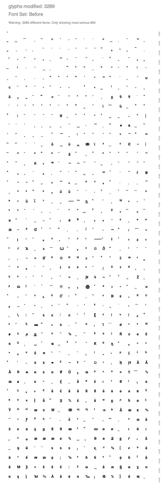
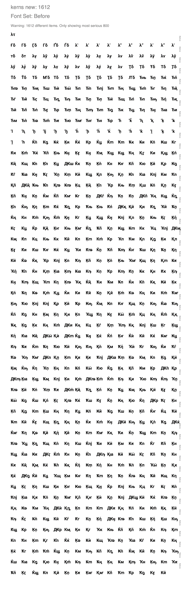
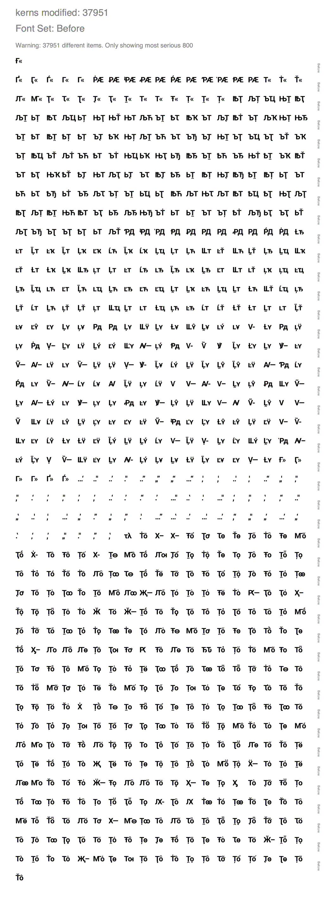
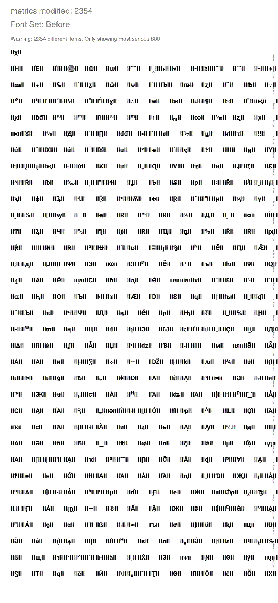
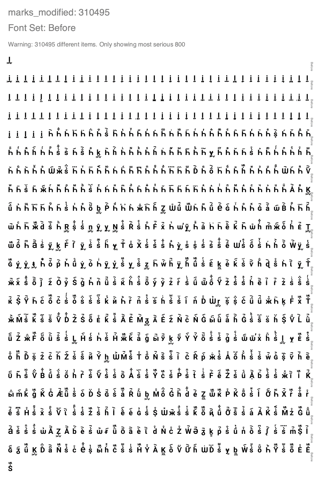
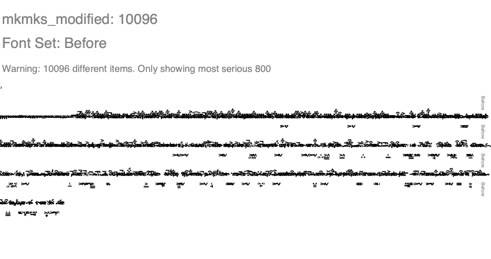

Diffenator
Displaying the 20 most significant items in each table. To increase use the '-ol' flag
names new: 2
| id | string |
|---|
| (294, 3, 1, 1033) | Condensed |
| (295, 3, 1, 1033) | Normal |
names modified: 5
| id | string_a | string_b |
|---|
| (2, 3, 1, 1033) | Bold | Regular |
| (3, 3, 1, 1033) | Google:Roboto Bold:2017 | Google:Roboto:2020 |
| (4, 3, 1, 1033) | Roboto Bold | Roboto |
| (5, 3, 1, 1033) | Version 2.138; 2017 | Version 3.0; 2020 |
| (6, 3, 1, 1033) | Roboto-Bold | Roboto-Regular |
attribs modified: 6
| table | attrib | value_a | value_b |
|---|
| OS/2 | fsSelection | 32 | 64 |
| head | xMax | 4220 | 4188 |
| head | xMin | -1870 | -1825 |
| head | modified | 2017/05/26 10:21:03 | 2020/05/28 20:04:32 |
| head | fontRevision | 2.13800048828125 | 3.0 |
| head | macStyle | 1 | 0 |
glyphs modified: 3289
| glyph | diff | string |
|---|
| uni032E | 0.8889 | ̮ |
| uni1AB8 | 0.8667 | ᪸ |
| uni20E8 | 0.8594 | ⃨ |
| uni20DB | 0.85 | ⃛ |
| uni02F3 | 0.84 | ˳ |
| uni1AB0 | 0.8382 | ᪰ |
| uni1DB7 | 0.8273 | ᶷ |
| ring | 0.8056 | ˚ |
| uni2E30 | 0.8 | ⸰ |
| uni1DD1 | 0.8 | ᷑ |
| uni0351 | 0.8 | ͑ |
| uni0357 | 0.8 | ͗ |
| uni207F | 0.7889 | ⁿ |
| uni1DFC | 0.787 | ᷼ |
| uni0339 | 0.7778 | ̹ |
| uniA67D | 0.7708 | ꙽ |
| uni2120 | 0.7692 | ℠ |
| uni0320 | 0.7619 | ̠ |
| uni1DFD | 0.7619 | ᷽ |
| uniFE2B | 0.7619 | ︫ |

kerns new: 1612
| left | right | value | string |
|---|
| lambda | tau | -72 | λτ |
| uni0492 | delta | -36 | Ғδ |
| uni0413 | delta | -36 | Гδ |
| uni04F6 | delta | -36 | Ӷδ |
| Gamma | delta | -36 | Γδ |
| uni0490 | delta | -36 | Ґδ |
| uni0403 | delta | -36 | Ѓδ |
| lambda | quotereversed | -31 | λ‛ |
| lambda | uni02BC | -31 | λʼ |
| lambda | quotesingle | -31 | λ' |
| lambda | quoteright | -31 | λ’ |
| lambda | quotedbl | -31 | λ" |
| lambda | second | -31 | λ″ |
| lambda | quotedblleft | -31 | λ“ |
| lambda | quoteleft | -31 | λ‘ |
| lambda | quotedblright | -31 | λ” |
| lambda | minute | -31 | λ′ |
| uni0442 | delta | -26 | тδ |
| delta | uni0442 | -21 | δт |
| lambda | gamma | -19 | λγ |

kerns modified: 37951
| left | right | diff | string |
|---|
| uni0492 | guillemotleft | -99.0 | Ғ« |
| uni0490 | guillemotleft | -99.0 | Ґ« |
| uni04F6 | guillemotleft | -99.0 | Ӷ« |
| uni0403 | guillemotleft | -99.0 | Ѓ« |
| Gamma | guillemotleft | -99.0 | Γ« |
| uni0413 | guillemotleft | -99.0 | Г« |
| uni1E56 | AE | 64.0 | ṖÆ |
| uniA750 | AE | 64.0 | ꝐÆ |
| uniA754 | AE | 64.0 | ꝔÆ |
| uniA752 | AE | 64.0 | ꝒÆ |
| P | AE | 64.0 | PÆ |
| uni1E54 | AE | 64.0 | ṔÆ |
| uni0420 | AE | 64.0 | РÆ |
| uni01A4 | AE | 64.0 | ƤÆ |
| uni1FEC | AE | 64.0 | ῬÆ |
| uni2C63 | AE | 64.0 | ⱣÆ |
| Rho | AE | 64.0 | ΡÆ |
| T | guillemotleft | -58.0 | T« |
| uni1E6A | guillemotleft | -58.0 | Ṫ« |
| Tcaron | guillemotleft | -58.0 | Ť« |

metrics modified: 2354
| glyph | diff_adv |
|---|
| chi | 44.0 |
| Etatonos | 34.0 |
| Epsilontonos | 32.0 |
| Iotatonos | 31.0 |
| uniA66E | 14.0 |
| uni047F | 13.0 |
| uni0461 | 13.0 |
| uni2057 | 13.0 |
| uni2038 | 12.0 |
| uni02EB | 12.0 |
| radical | 12.0 |
| uni2010 | 11.0 |
| uni2C66 | 11.0 |
| uni2034 | 11.0 |
| uni2037 | 11.0 |
| hyphen | 11.0 |
| uni2055 | 11.0 |
| uni02AF | 11.0 |
| uni2011 | 11.0 |
| uni2023 | 11.0 |

marks_modified: 310495
| base_glyph | mark_glyph | diff_x | diff_y |
|---|
| uni1E2C | uni1DFF | 10.0 | -413.0 |
| uni1E2D | uni1DFF | 10.0 | -413.0 |
| uni1E2D | uni0356 | 7.0 | -413.0 |
| uni1E2C | uni0356 | 7.0 | -413.0 |
| uni1E2D | uni1AB8 | -6.0 | -413.0 |
| uni1E2D | glyph02192 | -6.0 | -413.0 |
| uni1E2C | glyph02200 | -6.0 | -413.0 |
| uni1E2C | glyph02192 | -6.0 | -413.0 |
| uni1E2C | uni1AB8 | -6.0 | -413.0 |
| uni1E2D | uni031C | 6.0 | -413.0 |
| uni1E2D | glyph02200 | -6.0 | -413.0 |
| uni1E2D | uni0324 | -6.0 | -413.0 |
| uni1E2C | uni031C | 6.0 | -413.0 |
| uni1E2C | uni0324 | -6.0 | -413.0 |
| uni1E2C | uni0355 | 5.0 | -413.0 |
| uni1E2D | uni0355 | 5.0 | -413.0 |
| uni1E2D | uni0349 | -3.0 | -413.0 |
| uni1E2D | uni1DCA | -3.0 | -413.0 |
| uni1E2C | uni1DCA | -3.0 | -413.0 |
| uni1E2C | uni0349 | -3.0 | -413.0 |

mkmks_modified: 10096
| base_glyph | mark_glyph | diff_x | diff_y |
|---|
| uni1ABB | uni0312 | -40.0 | 389.0 |
| uni1ABC | uni0312 | -39.0 | 389.0 |
| uni1ABB | uni0313 | -25.0 | 389.0 |
| uni1ABC | uni0313 | -24.0 | 389.0 |
| uni1ABC | uni0314 | 20.0 | 389.0 |
| uni1ABB | uni0314 | 19.0 | 389.0 |
| uni1ABB | acutecomb | -115.0 | 283.0 |
| uni1ABC | acutecomb | -114.0 | 283.0 |
| uni1ABC | uni030F | 141.0 | 246.0 |
| uni1ABB | uni030F | 140.0 | 246.0 |
| uni1ABC | gravecomb | 97.0 | 283.0 |
| uni1ABB | gravecomb | 96.0 | 283.0 |
| uni1ABB | uni0310 | -1.0 | 368.0 |
| uni1ABC | uni0310 | 0.0 | 368.0 |
| uni1ABB | hookabovecomb | -66.0 | 276.0 |
| uni1ABC | hookabovecomb | -65.0 | 276.0 |
| uni1ABB | uni030B | -76.0 | 253.0 |
| uni1ABC | uni030B | -75.0 | 253.0 |
| uni1ABB | uni030E | -4.0 | 310.0 |
| uni1ABC | uni030E | -3.0 | 310.0 |
